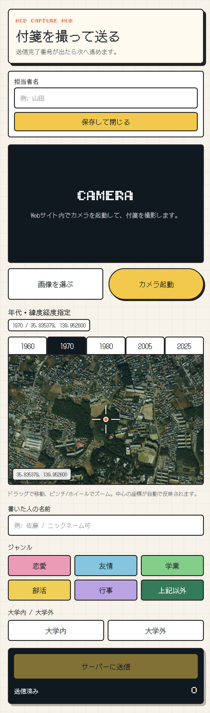
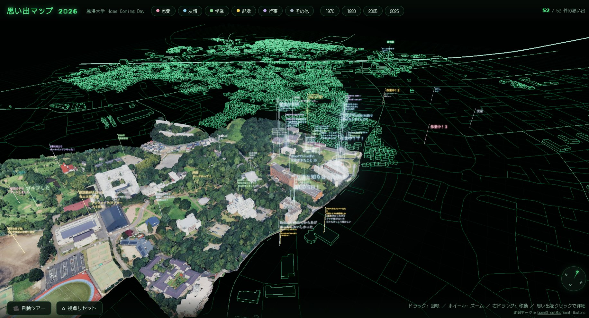

自主企画ゼミの準備を始める
日程を調整し、Home Coming Dayに向けた活動の準備を始めた。

HOME COMING DAY / 2026.06.20
卒業生の思い出を集め、古地図とデジタル地図に表示する展示をつくった。
活動を時系列で見る00 / OVERVIEW
2026年春、麗澤大学のHome Coming Dayに向けて、卒業生の思い出を集める展示を制作しました。 完成品だけでなく、途中で止まったこと、つなぎ直したこと、その後の展開までを報告します。
01 / ACTIVITY TIMELINE
日付を選ぶか、そのまま下へスクロールして活動を追えます。
日程を調整し、Home Coming Dayに向けた活動の準備を始めた。
情報共有の場所を整え、卒業生の思い出を集める企画を検討し始めた。
地図データ、投影、画面、アバター表現の参考例を集めた。
古地図の展示と、現在の地図へ思い出を表示する仕組みを並行して作ることにした。
早い段階で、3D空間に地図を出せることを確認した。
システムだけでなく、来場者が参加する会場全体を設計した。
あなたの青春が同じ地図上で出会う。離れていても思い出はキャンパスに。
必要な素材や前提が揃わず、予定した制作を進められない時間があった。
誰が何をいつまでに行うか、タスクリストで見えるようにした。
リハーサルが難しくなり、古地図の印刷など先に進められる作業へ切り替えた。
1960・1970・1980・2005・2025年の地図を切り出し、ラミネートした。
撮影、OCR、確認、保存、Unity表示のどこで人が確かめるかを決めた。


年代ごとに範囲が違う地図画像を同じ座標系へ合わせるため、画像の端に対応する緯度経度を調べた。
個別の見た目より先に、投稿から表示までの経路を成立させることを優先した。
投稿地点とUnity上の表示位置が合わない。
1メートルあたりのUnity単位の設定。
座標を直し、Supabaseの投稿をリアルタイム表示。
卒業生に思い出を書いてもらい、古地図とデジタル地図を使った展示を実施した。
役割を分担し、投稿から画面表示までのシステムを本番で動かした。
分担とシステム稼働はうまくいった。一方、参加方法、進捗共有、古地図の説明を改善点として挙げた。
HCDで使ったコードと画面を、再利用できる形へまとめた。

Three.jsでキャンパス、周辺地図、思い出のピンを表示。
浮いて見える地面や外周の処理を戻し、実寸に基づく位置へ補正。
HCDの振り返りを踏まえ、会場配置と参加者の動きを考え直した。
活動記録を整理しながら、オープンキャンパスと秋以降の展開を話し合っている。